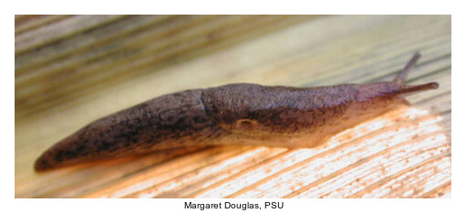
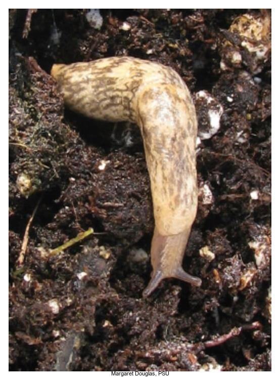

Pests
Defoliator
Bean leaf beetle
| Category | Defoliator |
| Insect Name | Bean leaf beetle |
| Latin Name | Cerotoma trifurcata |
| Abbr | BLB |
| Description | Adults are 1/4 inch (6 mm) long and usually yellow, tan, or red with black triangular marks on its wings. BLB larvae are white and segmented with a brown head and brown at the posterior end. Larvae feed on soybean nodules and roots. Adults feed on cotyledons, stems, and leaves. |
| Stage Start | VE |
| Stage End | R8 |
| Notes Scouting Method | Early season scouting for cotyledon, stem, and foliage damage from overwintering adults. Determine average percentage defoliation for plants in 5 areas of field and note the number of beetles per plant in the early season. Mid-season defoliation and beetle population estimates. Late season observe whether beetles are feeding on the pods (look for white paper membrane covering the seed). Look at 2 plants from 5 areas of the field to count the number of pods with insect damage. Use a net to determine the number of beetles in 20 sweeps at 5 areas. |
| Comment (Lifecycle) | 2 generations per year Abundant near woods (overwintering location) Cause damage to early emerging soybean cotyledons and seedling leaves Rarely causes economic impact in early generation Primary vector for bean pod mottle virus |
| Major | 30 percent defoliation until bloom, about 15 percent while pods are small and soft, and about 30 percent when pods start hardening |
| Citation | https://extension.entm.purdue.edu/fieldcropsipm/insects/bean-leaf-beetle.php |


Grasshopper
| Category | Defoliator |
| Insect Name | Grasshopper |
| Latin Name | Melanoplus spp. |
| Abbr | GH |
| Description | GH damage increases in dry conditions in years. Several species of grasshopper feeds leaf tissue. GH often move from nearby cut hay or small grain fields. |
| Stage Start | V2 |
| Stage End | R8 |
| Notes Scouting Method | Estimate the number of grasshoppers in 5 locations of the field. Count the number of grasshoppers that jump from an approximate square yard (90 cm square). Check field edges for GH, since they move from edges across the field. Estimate defoliation in the top, middle, and bottom of the soybean canopy. |
| Comment (Lifecycle) | Most GH overwinter as eggs in fence rows and grassy areas adjacent to soybean fields. Nymphs hatch in late May through July. Nymphs go through 5-6 nymphal stages and become adults around 40-60 days. Adults feed on leaves primarily from July through September. |
| Major | Managment is required with 30-45 nymphs per square yard (90 cm square) in the early season Management is required is 8-14 adults are found in a square yard (90 cm square) 30 percent defoliation until bloom, about 15 percent while pods are small and soft, and about 30 percent when pods start hardening |
| Citation | https://soybeanresearchinfo.com/soybean-pest/grasshoppers/ https://extension.entm.purdue.edu/fieldcropsipm/insects/soybean-grasshopper.php |

Green cloverworm
| Category | Defoliator |
| Insect Name | Green cloverworm |
| Latin Name | Hypena scabra |
| Abbr | GC |
| Description | Larvae are pale green with two white strips on each side of the body. Larvae are about 1.25 inches (31.8 mm) with 4 abdominal prolegs (loopers have 3, but are commonly confused). Adult moths overwinter in buildings and protected sites. |
| Stage Start | V2 |
| Stage End | R8 |
| Notes Scouting Method | If defoliation is present, use a net to sweep 5 areas of the field. Determine percentage defoliation for several plants in each area and estimate average defoliation for the field. Action threshold is eight or more worms per linear foot of row. |
| Comment (Lifecycle) | Two generations per year 1st generation develops in May and June on legume crops The larvae fro the 2nd generation from late June to August (occasionally economically damaing) |
| Major | 30 percent defoliation until bloom, about 15 percent while pods are small and soft, and about 30 percent when pods start hardening |
| Citation | https://extension.entm.purdue.edu/fieldcropsipm/insects/green-cloverworm.php |


Japanese beetle
| Category | Defoliator |
| Insect Name | Japanese beetle |
| Latin Name | Popillia japonica |
| Abbr | JB |
| Description | Adults are approximately 1/2 inch (13 mm) long and are green with bronze colored wing covers. Larvae are 1/4 inch to 1 inch (6 to 25 mm) long and goes through three instars. Larvae feed on decaying plant material until overwintering. JB damage plants by skeletonizing leaves, stripping away tissue between large leaf veins and some small veins. Yield reductions are often low and control is usually not recommended. |
| Stage Start | V2 |
| Stage End | R8 |
| Notes Scouting Method | Take 20 sweeps with a net in 5 areas of a field Estimate the average defoliation across the field JB damage is not uniform across the field and only feed on the upper canopy |
| Comment (Lifecycle) | Larvae overwinter in soil until they emerge as pupae in May. Adult beetles emerge in June and are found in fields until September. |
| Major | 30 percent defoliation until bloom, about 15 percent while pods are small and soft, and about 30 percent when pods start hardening |
| Citation | https://extension.entm.purdue.edu/fieldcropsipm/insects/soybean-japanese-beetle.php |


Mexican bean beetle
| Category | Defoliator |
| Insect Name | Mexican bean beetle |
| Latin Name | Epilachna varivestis |
| Abbr | MBB |
| Description | The MBB defoliate leaves similarly to the JB by skeletonizing leaves, stripping tissue between the veins. Adult beetles are terrapin shaped and slightly larger than 0.25 inch long. Adults are yellow to copper colored and have 16 black spots. Larvae are yellow and covered with spines with 4 larval stages and the largest reaching 1/3 inch (8.5 mm). |
| Stage Start | V2 |
| Stage End | R8 |
| Notes Scouting Method | Estimate the average percentage defoliation level for the field. Take 20 net sweeps in five areas of the field to assess the population size. Determine the amount of damage to pods due to insect damage, though MBB rarely damages developing beans. |
| Comment (Lifecycle) | Adults overwinter under plant debris and in protecrted areas Eggs are laid in clusters of 40-50 on the underside of soybean leaves Larvae emerge in June through September and go through four stages Pupae emerge from July until October and attach to the underside of leaves |
| Major | 30 percent defoliation until bloom, about 15 percent while pods are small and soft, and about 30 percent when pods start hardening |
| Citation | https://extension.entm.purdue.edu/fieldcropsipm/insects/mexican-bean-beetle.php |


Silver-spotted skipper
| Category | Defoliator |
| Insect Name | Silver-spotted skipper |
| Latin Name | Epargyreus clarus |
| Abbr | SSS |
| Description | Adults are butterflies with brown wings and a large white spot on the underside of each hind wing. Wingspan around 2 inches (51 mm). Eggs are green with red on top. Larve are up to 2 inches (51 mm) in length. Larvae body is yellow with stripes and the head is dark red to brown with bright orange prolegs. Adults prefer forest edges, swamps, and areas where nectar can be found. |
| Stage Start | V2 |
| Stage End | R8 |
| Notes Scouting Method | Scouting is similar to any defoliator by estimating damage across the field and larva counts using a sweep net. Typically localized feeding by larvae, but adults can also be seen feeding on flowers later in the season. Look for larva in leaves rolled together into shelters. |
| Comment (Lifecycle) | SSS larvae live in leaf shelters they form for protection When mature, larvae pupate in leaf nests and overwinter as pupae Adults lay their eggs in the fall on the host plant or directly nearby |
| Major | 30 percent defoliation until bloom, about 15 percent while pods are small and soft, and about 30 percent when pods start hardening |
| Citation | https://entnemdept.ufl.edu/creatures/bfly/silver-spotted_skipper.htm |


Slugs
| Category | Defoliator |
| Insect Name | Slugs |
| Latin Name | Deroceras spp. |
| Description | Soft-bodied, legless, gray gastropods from 1/2 inch to 4 inches in length (13-102 mm). Slugs are favored by plant residue on the soil surface and moist conditions. They feed on decaying organic matter and plant foliage, feeding mostly at night. Slugs leave a slimy silver-colored trail behind their path. |
| Stage Start | VE |
| Stage End | V2 |
| Notes Scouting Method | Baits can be used to attract slugs and slug pellets can be used with a goal of 4-6 pellets per square foot. |
| Comment (Lifecycle) | Slugs lay translucent round eggs in the spring which hatch in about 1 month, about early May in Pennsylvania. They live for a year or more and overwinter as adults or eggs. The are often active at night and on cloudy days. |
| Major | An average of one to two slugs per shingles over a few weeks; otherwise, heavy feeding on cotyledons and unifoliate leaves that is causing plant death |
| Citation | https://extension.entm.purdue.edu/fieldcropsipm/insects/soybean-slugs.php |



White-tailed deer
| Category | Defoliator |
| Insect Name | White-tailed deer |
| Latin Name | Odocoileus virginianus |
| Abbr | Deer |

Piercing-sucking
Brown marmorated stink bug
| Category | Piercing-sucking |
| Insect Name | Brown marmorated stink bug |
| Latin Name | Halyomorpha halys |
| Abbr | BMSB |
| Description | Adults are over 0.5 inches long (17 mm) and are brown with a “shield” shape. Adult antennae have lighter bands and dark bands on the rear of the front pair of wings. Nymphal instars are yellowish red in the first instar and progress to white with reddish spots in fifth instar. Nymph legs, head, and thorax are black, with red eyes. |
| Stage Start | V2 |
| Stage End | R8 |
| Notes Scouting Method | Most susceptible to BMSB from R4-R7 Adults often aggregate in certain areas of the field, starting in the edge of fields 8-20 sweeps with a net to estimate the population of BMSB in several areas in a field |
| Comment (Lifecycle) | Eggs are deposited from May through August in masses of 20-30 eggs on underside of leaves. Eggs hatch and go through 5 nymphal instar molts. Adults emerge late April to mid-May. |
| Major | 3.5 stink bugs per 15 sweeps in 30-inch-row soybeans; 2.5 stink bugs per 15 sweeps in narrow-row beans; or one stink bug per foot of row. |
| Citation | https://extension.psu.edu/brown-marmorated-stink-bug https://soybeanresearchinfo.com/soybean-pest/stink-bugs/ |


Green stink bug
| Category | Piercing-sucking |
| Insect Name | Green stink bug |
| Latin Name | Acrosternum hilare |
| Abbr | GSB |
| Description | Nymphs are reddish brown and remain near egg masses. Second and third instar and they become light green with black and white stripes. Fourth and fifth instars are green with yellow and black stripes. Adults are over 1/2 inch (12.5 mm) long and are flattened, shield-shaped bugs that are bright green. Lay yellow to green eggs that turn pink-gray over time. |
| Notes Scouting Method | GSB cause injury by puncturing pods and sucking fluid from beans. Look for spots on beans and beans with hardened, knotty appearance that fall of the plants. Seeds may be small, shriveled, or discolored. Take 20 sweeps with a sweep net in 5 areas an destimate the number of BSB after soybean pod formation. Scout along the edges of a field to determine if there are numberous BSBs. |
| Comment (Lifecycle) | Nymphs hatch from barrel-shaped eggs from mid-May throughout the growing season. GSB adults appear in soybean fields around mid-July until harvest. Adults overwinter in adjacent wooded and weedy areas. |
| Major | 3.5 stink bugs per 15 sweeps in 30-inch-row soybeans; 2.5 stink bugs per 15 sweeps in narrow-row beans; or one stink bug per foot of row. |
| Citation | https://bookstore.ksre.ksu.edu/pubs/mf2891.pdf https://extension.entm.purdue.edu/fieldcropsipm/insects/greenstinkbug.php |


Potato leafhopper
| Category | Piercing-sucking |
| Insect Name | Potato leafhopper |
| Latin Name | Empoasca fabae |
| Abbr | PLH |
| Description | Appear in Midwest by the end of April or early May and migrates into Pennsylvania around mid-May. Economic damage is not common unless there are adjacent alfalfa fields and soybean plants are small. Adult is yellow-green, wedge-shaped insect about 1/8 inch (3 mm) long. Nymphs look similar to adults, but are smaller and more yellow and cause the most damage. The life cycle lasts about 1 month. |
| Stage Start | V2 |
| Stage End | R8 |
| Notes Scouting Method | Plant symptoms are yellow patches, “hopper burn”, crinkling, and cupping of the leaves and looks similar to herbicide damage. Plants may be stunted, especially those under moisture stress. For V4 soybeans or younger, calculate the average number of leafhoppers on five plants, from five areas of a field. For soybean V5 or later, take 20 sweeps with a net in 5 areas of a field and calculate the number of leafhoppers per sweep. Treatment is recommended if 13 or more leafhoppers per plant. |
| Comment (Lifecycle) | PLH spread from the south and Midwest every year around May every year. Nymphs are responsible for feeding on leaves with piercing-sucking mouthparts. |
| Major | V1, one per plant; V2, three per plant; V3, six per plant; R4, nine per plant; or four per sweep if plants are moisture stressed, and eight per sweep if plants not moisture stressed. |
| Citation | https://extension.entm.purdue.edu/fieldcropsipm/insects/soybean-potato-leafhopper.php http://bulletin.ipm.illinois.edu/pastpest/articles/199914g.html |


Soybean aphid
| Category | Piercing-sucking |
| Insect Name | Soybean aphid |
| Latin Name | Aphis glycines |
| Abbr | SA |
| Description | Vectors several viruses. There are larger populations where buckthorn, a secondary host, is present. Populations have been low in Pennsylvania since major outbreaks occurred in the early 2000s. |
| Stage Start | VE |
| Stage End | R8 |
| Notes Scouting Method | Fields should be monitored early in the season. Most impactful damage occurs during soybean reproductive growth stages. Aphid sampling includes counting aphids on 20-30 plants per field, counting mostly on leaf undersides. |
| Comment (Lifecycle) | Soybean aphid spread from the Midwest into eastern states and impact Pennsylvania in late June to mid-July. The lifecycle is complicated because females are able to reproduce clones parthenogenically throughout the summer, rapidly increasing populations. Found in soybeans through August. Overwintering occurs on Rhamnus cathartica, buckthorn as eggs. |
| Minor (Why: Monitoring Some Disesases, When Do They Show Up, Spatial Distributions And Tieing Up With Agro Practices And Varieties Is Very Interesting, Especially From A Long Term Perspective) | < 250 aphids/plant, continue to scout |
| Major | R1 to R4: = 250 aphids/plant, treament advised. R5: > 250, treatment advised if populations are growing. R6: > 250, treatment advised if under drought stress. R7-R8: Treatment not necessary. |
| Citation | https://extension.entm.purdue.edu/fieldcropsipm/insects/soybean-aphid.php |


Soybean gall midge
| Category | Piercing-sucking |
| Insect Name | Soybean gall midge |
| Latin Name | Resseliella maxima |
| Abbr | SGM |
| Description | Adults 1/8 inch (2-3 mm) in length with mottled wings, long banded legs, and orange abdomen. Larvae are small, legless, and maggot-like. Larvae are clear to white-colored when young and turn bright orange as they mature. |
| Stage Start | V2 |
| Stage End | R8 |
| Notes Scouting Method | Begin scouting after V2 growth stage. Infestations are on the edges near previous soybean fields. Heavily infested plants wilt and die and stems become brittle and break near the soil line. Look for the larvae in the stem. |
| Comment (Lifecycle) | The life cycle is not yet well understood. Larvae may overwinter in cocoons. Adults emerge around June and may extend into July. |
| Citation | https://extension.umn.edu/soybean-pest-management/soybean-gall-midge-minnesota-soybean |


Threecornered alfalfa hopper
| Category | Piercing-sucking |
| Insect Name | Threecornered alfalfa hopper |
| Latin Name | Spissistilus festinus |
| Abbr | TCAH |
| Description | Adults green and around 1/4 inch (6 mm) long, possibly with red-orange stripe above front legs. Eggs are white and oval 1/32 inch (1 mm) long with a rough surface. Nymphs are tan-yellow colored and spiny with white legs and abdomen. Damage is only found in no-till fields and more often in low population fields that are late planted. |
| Stage Start | VE |
| Stage End | R1 |
| Notes Scouting Method | Damage from adults and nymphs includes sucking sap from the main stem, branches, and leaf petioles. Plants may lodge if enough feeding occurs, but significant yield reductions uncommon. Walk fields after a wind storm to look for any lodging due to hopper feeding. Check seedlings for damage and look for infested nymphs/girdled stems. |
| Comment (Lifecycle) | TCAH hopper overwinters as eggs in plant tissue or as adults in protected grass areas. Nymphs emerge from overwintering eggs feed on weeds on field edges and move to soybean seedlings. Females produce 30-40 eggs, typically in legume stems. Nymphs hatch 2-6 weeks later and it it takes 3-10 weeks (5 instars) to become adults. |
| Major | Hoppers infested 10 percent or more of plants less than 10-12 inches tall. Or when 50 percent of seedling plants are girdled. For plants setting pods, one hopper per sweep (100 per 100 sweeps) is sometimes recommended for treatment. |
| Citation | https://soybeans.ces.ncsu.edu/three-cornered-alfalfa-hopper/ https://extension.tennessee.edu/publications/documents/W201.pdf |


Two-spotted spider mite
| Category | Piercing-sucking |
| Insect Name | Two-spotted spider mite |
| Latin Name | Tetranychus urticae |
| Abbr | TSSM |
| Description | Populations increase in hot, dry conditions (at 90° F the life cycle is complete in 7 days). TSSM are just 1/50 inch (0.5 mm) and is usually greenish-yellow, but could be orange-red or brown. Overwintering females are orange, have an elliptical body, and bear 12 pairs of setae, while males are slightly smaller. Two large dark spots are present on the body. TSSM uses piercing-sucking mouthparts and penetrate leaf tissue mostly from the leaf underside. |
| Stage Start | V2 |
| Stage End | R8 |
| Notes Scouting Method | Use of a magnifying/hand lens will help to find. |
| Comment (Lifecycle) | Eggs are attached to a fine silk on leaves and hatch within 3 days. Larvae emerge, go through 2 nymphal stages, and the adult. The life cycle takes between 5 and 25 days to complete depending on the temperature. Adults live 2-5 weeks and females may lay several hundred eggs during her life. |
| Major | Treat when plants along field margin or within field show discoloration and mites are present. |
| Citation | https://extension.umn.edu/pest-management/twospotted-spider-mites-soybean https://entnemdept.ufl.edu/creatures/orn/twospotted_mite.htm |


Seedling pest
Seed corn maggot
| Category | Seedling pest |
| Insect Name | Seed corn maggot |
| Latin Name | Delia platura |
| Abbr | SCM |
| Description | Early season pest of corn during damp, cool seasons, though rarely impacts soybean stands. Larvae are pale, yellow to white maggot that burrows in soybean seeds. The SCM is about 1/4 inch (6 mm) long and is cylindrical. Narrow body with small mouth hooks in the front of the body. Create narrow tunnels on cotyledons as they mine along the stem. |
| Stage Start | seed |
| Stage End | seed |
| Notes Scouting Method | Sample areas where plants failed to emerge by digging up 2 feet (0.6 m) of linear row in 5 areas in field. Examine ungerminated seeds for damage and presence of maggots. |
| Comment (Lifecycle) | Adult flies emerge in April and May. Adults lay eggs in moist soils. Eggs hatch within a few days and maggots feed on and burrow in seeds. Larvae feeds for 2-3 weeks until changing to the brown pupal stage and then to adults. The entire cycle takes around 21 days and several generations occur each year. Only the first generation may cuase yield losses. |
| Major | No treatment actions; good idea to use a seed treatment if soil typically is cold and wet after soybean is planted, especially if a green living cover crop has been tilled. |
| Citation | https://extension.entm.purdue.edu/fieldcropsipm/insects/soybean-seedcorn-maggot.php https://fieldcropnews.com/2013/06/bugs-versus-slugs/ |